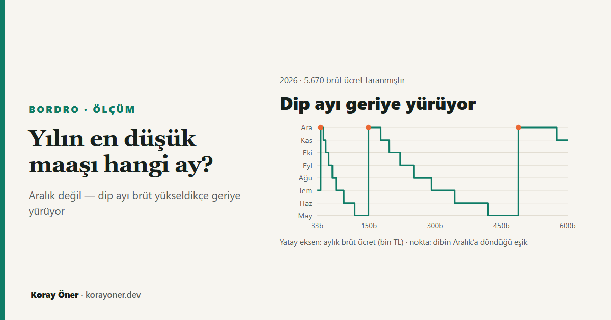

Kısa cevap
Brütünüze bağlı. Netin dibe vurduğu ay, brüt ücret yükseldikçe geriye doğru yürüyor: aralıktan kasıma, ekime, eylüle, ağustosa, temmuza, hazirana ve mayısa kadar. Sonra başa dönüyor ve yürüyüş yeniden başlıyor. Taranan brüt değerlerinin %78,8’inde dip aralıktan önce, %49,0’ında ise net yıl sonuna kadar dipten bir miktar geri çıkıyor.
Bu yazı neden düştüğünü değil, ne zaman dibe vurduğunu konu alıyor. Mekanizmanın kendisi ayrı bir yazıda: maaşım neden düştü?
Neti iki kuvvet hareket ettiriyor
Brütünüz yıl boyunca hiç değişmese bile net her ay aynı olmuyor, çünkü iki ayrı şey ters yönlerde çekiyor.
Aşağı çeken: gelir vergisi aylık kazanca değil yıl başından beri biriken kümülatif matraha göre hesaplanıyor. Matrah üst dilimlere girdikçe verginiz artıyor. Brüt yükseldikçe bu geçişler yılın daha erken aylarına kayıyor.
Yukarı iten: asgari ücret istisnası (GVK m.23/1-18) sabit bir tutar değil — asgari ücretlinin o ay ödeyeceği vergi kadar. Asgari ücretlinin kümülatif matrahı da yıl içinde birikiyor ve 2026’da yedinci ayda tarifenin ilk dilimini aşıyor. O aydan itibaren istisna üst dilimden hesaplanıp büyüyor.
| Ay | İstisnanın büyümesi |
|---|---|
| Temmuz | 326,42 TL |
| Ağustos | 1.077,35 TL |
Bu tutarlar brüt ücretinizden bağımsız: yalnızca asgari ücrete bağlı oldukları için 35.000 TL brütte de 350.000 TL brütte de aynı. Değişen şey, sizin o ayki dilim geçişinizin ne kadar ağır bastığı. İstisnanın büyümesi kendi geçişinizden büyükse o ay eline daha fazla para geçer.
Yılın dibi, aşağı çeken kuvvetin son kez kazandığı aydır.
Brütünüze göre dip ayı
Aşağıdaki tablo, yıl boyunca sabit brüt ücret alan bekâr bir çalışan için taramanın sonucudur. Satırlar, dip ayının aynı kaldığı bitişik brüt aralıklarıdır.
| Aylık brüt ücret | Dip ayı | Geri kazanılan |
|---|---|---|
| 33.100 TL – 40.700 TL | Temmuz | 17,85 TL |
| 40.800 TL – 47.000 TL | Aralık | — |
| 47.100 TL – 52.200 TL | Kasım | — |
| 52.300 TL – 58.800 TL | Ekim | — |
| 58.900 TL – 67.200 TL | Eylül | — |
| 67.300 TL – 75.400 TL | Ağustos | — |
| 75.500 TL – 93.000 TL | Temmuz | 30,85 TL |
| 93.100 TL – 117.600 TL | Haziran | 1.101,02 TL |
| 117.700 TL – 148.700 TL | Mayıs | 1.403,77 TL |
| 148.800 TL – 176.400 TL | Aralık | — |
| 176.500 TL – 196.000 TL | Kasım | — |
| 196.100 TL – 220.500 TL | Ekim | — |
| 220.600 TL – 252.100 TL | Eylül | — |
| 252.200 TL – 291.400 TL | Ağustos | — |
| 291.500 TL – 343.700 TL | Temmuz | 9,35 TL |
| 343.800 TL – 419.500 TL | Haziran | 1.087,58 TL |
| 419.600 TL – 488.500 TL | Mayıs | 1.403,78 TL |
| 488.600 TL – 574.500 TL | Aralık | — |
| 574.600 TL – 600.000 TL | Kasım | — |
Tablodaki üç sıçrama — dip ayının mayıstan aralığa geri dönmesi — brütün belli eşikleri geçtiği yerlerde oluyor. Bu eşikleri kapalı bir kurala bağlamak için iki deneme yaptım ve ikisi de ölçümle çürüdü: “yıllık matrahın tarifede bir sınırı ilk aştığı brüt” üç eşiğin hiçbirini tutturmadı, “temmuz sonrası kazanç ile kaybın yarışı” ise brütlerin ancak %57,9’unda doğru sonuç verdi. Bu yüzden eşikler burada bir formülden değil, taramadan geliyor.
Bunun pratik karşılığı
Ocak netini referans almayın. Ocak, yılın en yüksek netidir ve on iki ayın hiçbirini temsil etmez. Maaş pazarlığında ya da iki teklifi karşılaştırırken on iki aylık ortalama net daha doğru bir ölçüdür.
“Aralığa kadar daha da düşecek” doğru olmayabilir. Taranan brütlerin yarısına yakınında net, dipten sonra yıl sonuna kadar bir miktar geri çıkıyor. Bu geri çıkış çoğu bantta küçük, bazılarında 1.400 TL’ye yaklaşıyor.
Düşüş her zaman kesintili değil. Taranan brütlerin %8,1’inde net yıl boyunca hiç yükselmiyor: kendi dilim geçişiniz istisnanın büyümesinden her ay daha ağır basıyorsa düşüş gerçekten tekdüzedir.
Yöntem
Tarama, sitenin bordro motorunun 2026 parametreleriyle yapıldı: asgari ücretin üstündeki ilk 100’lük kattan (33.100 TL) 600.000 TL’ye kadar 100 TL adımlarla 5.670 brüt değeri, her biri için 12 aylık bordro. Varsayımlar: yıl boyunca sabit brüt, tek işveren, bekâr ve çocuksuz, ek ödeme yok, SGK tavanı ve damga istisnası uygulanmış.
Dip ayı, netin en düşük olduğu ilk aydır; net birden fazla ayda aynı en düşük değerdeyse erken olan seçilmiştir, çünkü sorulan şey netin ne zaman dibe vurduğudur.
Tablolar bu sayfaya elle yazılmadı; motordan üretiliyor ve her değişiklikte otomatik olarak doğrulanıyor. Tarife ya da asgari ücret değiştiğinde satırlar kayar ve kontrol kırmızıya döner.
Kendi rakamınızla bakın
- Brütten net maaş hesaplama — kendi brütünüzün 12 aylık dökümünü ve dip ayını görün.
- Maaşım neden düştü? — kümülatif matrahın işleyişi, ay ay.
- Vergi dilimleri asgari ücrete yetişemiyor mu? — eşiklerin yıllar içindeki seyri.
- Zam net maaşa ne kadar yansır?
Kaynaklar
- 193 sayılı Gelir Vergisi Kanunu m.103 (tarife) ve m.23/1-18 (asgari ücret istisnası).
- 5510 sayılı Kanun m.82 (prime esas kazanç tavanı).
- Asgari Ücret Tespit Komisyonu kararı (Resmî Gazete).
Sık sorulan sorular
Yılın en düşük maaşı hep aralıkta mı olur?
Hayır. 2026 parametreleriyle taranan 5.670 brüt değerinin %78,8’inde net, yılın dibini aralıktan önce görüyor. Dip ayı brüt yükseldikçe geriye doğru yürüyor ve mayısa kadar inebiliyor.
Net maaş neden bazı aylarda yükseliyor?
Asgari ücret istisnası, asgari ücretlinin o ay ödeyeceği vergi kadardır. Asgari ücretlinin kümülatif matrahı 2026’da yedinci ayda tarifenin ilk dilimini aşıyor; o aydan itibaren istisna büyüyor. Kendi dilim geçişiniz bu büyümeden küçükse o ay netiniz yükselir.
Ocak netime göre bütçe yapabilir miyim?
Ocak yılın en yüksek netidir ve on iki ayı temsil etmez. Bütçe ve maaş pazarlığı için on iki aylık ortalama net daha doğru bir ölçüdür.
Düşüş her brütte kesintili mi?
Hayır. Taranan brütlerin %8,1’inde net yıl boyunca hiç yükselmiyor; bu bantlarda kendi dilim geçişiniz istisnanın büyümesinden her ay daha ağır basıyor ve düşüş gerçekten tekdüzedir.